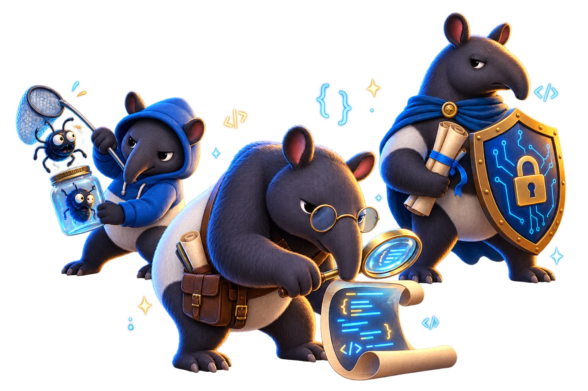

Waking the audit tapirs…
Yearn security archive · Read-only
Reviewed code.
Reviewed code.
Recorded findings.
Completed CLI reviews, collected in one searchable-looking-but-deliberately-simple library.
Archive squad: alphabet-ish

{ } !bug
Publishing source
Owner CLI
01
Loading archive…